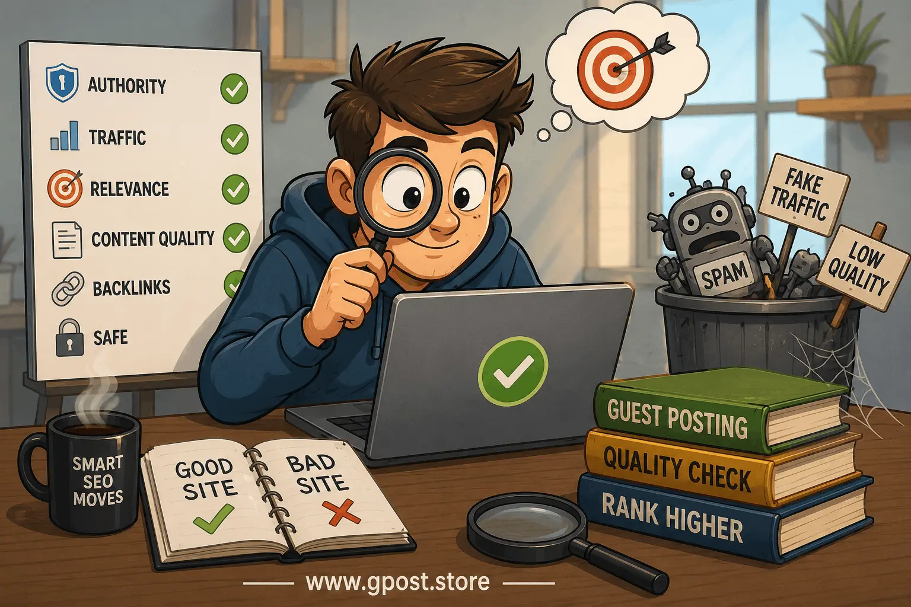

How to qualify websites for guest posting – Complete SEO Guide for Safe Backlink Building in 2026
How to qualify websites for guest posting is the most critical skill every SEO professional and digital marketer must master before publishing any guest article online, because choosing the wrong website can damage your rankings instead of improving them.
In today’s SEO landscape, Google is extremely strict about backlink quality, and random guest posting on low-quality blogs, spam networks, or fake traffic websites can lead to wasted effort or even ranking drops. That’s why understanding How to qualify websites for guest posting is not optional anymore—it is a survival skill for SEO success.
This complete guide will walk you through practical, real-world methods to evaluate websites, understand guest post quality metrics, avoid spammy domains, and build strong, authority-driven backlinks that actually move rankings.
What is How to qualify websites for guest posting?
How to qualify websites for guest posting is the process of analyzing and verifying a website before publishing a guest post to ensure it is trustworthy, relevant, and beneficial for SEO purposes.
In simple terms, it means checking whether a website is worth your backlink or not. This includes analyzing domain authority, traffic quality, niche relevance, engagement, and backlink profile before outreach.
Simple SEO Definition
It is a method of evaluating websites using SEO metrics and real-world signals to ensure your guest post backlink improves rankings instead of harming your SEO profile.
Why How to qualify websites for guest posting Matters
Understanding How to qualify websites for guest posting matters because backlinks are one of Google’s top ranking factors, but not all backlinks are equal.
- High-quality backlinks improve domain authority
- Relevant guest posts increase organic traffic
- Spam links can trigger Google penalties
- Fake traffic sites waste outreach efforts
If you ignore proper qualification, you might end up building links on expired blogs, private blog networks (PBNs), or low-quality domains that provide zero SEO value.
Guest Post Website Quality Metrics You Must Check
When learning How to qualify websites for guest posting, you must understand key SEO metrics that define website quality.
1. Domain Authority (DA) and Domain Rating (DR)
These metrics indicate how strong a website is based on its backlink profile. Higher values usually mean stronger SEO power, but they should never be trusted alone.
2. Organic Traffic Quality
Always check whether traffic is coming from Google search or fake sources. A website with 50K organic visitors is more valuable than one with 500K bot traffic.
3. Niche Relevance
Your guest post should always match the website’s niche. Irrelevant backlinks often get ignored by search engines.
4. Spam Score
High spam score websites are risky and should be avoided immediately.
How to Verify Guest Posting Websites
One of the most important parts of How to qualify websites for guest posting is learning how to verify guest posting websites before publishing content.
- Check website age using WHOIS tools
- Analyze backlink profile using SEO tools
- Review indexed pages in Google
- Check social media presence and engagement
If a website has no real audience, no engagement, and only publishes guest posts, it is likely a link farm.
How to Identify Fake Traffic Websites
Many beginners fail in How to qualify websites for guest posting because they cannot detect fake traffic websites.
Common Signs of Fake Traffic
- Sudden traffic spikes without reason
- No ranking keywords in Google Search Console
- Very low engagement rate
- Traffic coming from irrelevant countries
Learning how to identify fake traffic websites is essential because these sites often sell guest posts but provide zero SEO value.
How to Avoid Bad Guest Posting Sites
A major part of How to qualify websites for guest posting is avoiding harmful websites that can damage your SEO performance.
- Avoid websites that accept any niche content
- Avoid sites with excessive outbound links
- Avoid websites with duplicate content
- Avoid PBN-style blogs
If a site looks too easy to get published on, it is usually not valuable for SEO.
Step-by-Step Strategy for Website Qualification
Here is a practical workflow for mastering How to qualify websites for guest posting in real SEO campaigns.
Step 1: Research Websites
Use Google search operators like “write for us + niche” or competitor backlink analysis tools.
Step 2: Check SEO Metrics
Analyze DA, DR, traffic, and spam score before outreach. Guest Post Link Building
Step 3: Evaluate Content Quality
Read existing articles to see if content is original, useful, and well-written.
Step 4: Check Link Patterns
Excessive outbound links or irrelevant links indicate low-quality SEO practices.
Step 5: Final Decision
Only proceed if the website passes all quality checks.
Image: Guest Posting Quality Analysis Workflow

Step-by-step workflow for evaluating guest posting website quality and SEO safety checks
Common Mistakes in Guest Posting Qualification
Even experienced marketers make mistakes when learning How to qualify websites for guest posting.
- Trusting DA alone without traffic analysis
- Ignoring niche relevance
- Using automated outreach tools blindly
- Publishing on spam networks for quick backlinks
Pro SEO Tips for Better Qualification
Advanced strategies can significantly improve your results when applying How to qualify websites for guest posting. Guest Posting Outreach
- Focus on topical authority, not just metrics
- Use natural anchor text distribution
- Build long-term relationships with editors
- Analyze competitor backlinks for hidden opportunities
Is Guest Posting Still Worth It in 2026?
Yes, guest posting is still powerful in 2026, but only when combined with strict qualification methods like How to qualify websites for guest posting.
Google now prioritizes relevance, authority, and natural link placement. Low-quality guest posting no longer works, but strategic guest blogging is still one of the best SEO techniques for authority building.
When to Avoid Guest Posting Websites
Not every opportunity is worth pursuing. Avoid guest posting when:
- Website has no real organic traffic
- Content looks AI-generated or spammy
- Owner sells links openly without editorial control
- Site is part of a PBN network
Advanced Insight: Guest Post Website Qualification Reality Check
Many SEO professionals misunderstand How to qualify websites for guest posting because they focus only on surface-level metrics like DA and DR. In reality, Google evaluates deeper signals like topical authority clusters, user engagement, and link neighborhood quality.
FAQs
How to qualify websites for guest posting for better SEO results?
Qualifying websites for guest posting means checking domain authority, organic traffic, niche relevance, spam score, and content quality to ensure strong SEO backlinks and long-term ranking benefits.
What is website qualification in guest posting SEO strategy?
Website qualification in guest posting is the process of evaluating a site’s authority, relevance, and traffic before placing backlinks to ensure maximum SEO value and ranking improvement.
What are common mistakes when choosing guest posting websites?
Common mistakes include selecting spammy sites, ignoring niche relevance, and focusing only on DA, which can reduce link value and negatively impact SEO performance and rankings.
Guest posting vs niche edits – which is better for SEO?
Guest posting creates fresh content with backlinks, while niche edits add links to existing pages. Guest posts build branding, while niche edits offer faster authority transfer and quicker SEO impact.
How to find and qualify high-authority guest posting sites step by step?
Search niche “write for us” sites, then analyze traffic, backlinks, content quality, and engagement. Ensure indexing stability and relevance before outreach for effective SEO results.
What SEO strategy should be used to select guest posting sites?
Use a relevance-first strategy by matching niche topics, analyzing competitor backlinks, and prioritizing sites with real organic traffic, authority metrics, and strong topical relevance.
How does guest posting site quality affect Google rankings?
High-quality sites pass stronger link equity, improving rankings and authority, while low-quality sites can harm trust signals and reduce long-term SEO performance and keyword stability.
Which tools help in qualifying guest posting websites?
Tools like Ahrefs, SEMrush, and Moz help analyze domain authority, backlinks, traffic, and spam score to identify high-quality, safe, and relevant guest posting opportunities.
How does guest posting improve website authority and traffic growth?
Guest posting builds high-quality backlinks from niche-relevant sites, increasing domain authority, referral traffic, and brand visibility, which leads to stronger search rankings over time.
What is the future of guest posting in SEO and Google updates?
Guest posting will remain effective when focused on quality and relevance, as Google increasingly rewards natural, contextual backlinks from authoritative and trustworthy websites.
Conclusion
Mastering How to qualify websites for guest posting is essential for building a strong and safe backlink profile in modern SEO. Without proper qualification, even high-authority backlinks can become useless or harmful.
Always focus on relevance, real traffic, and content quality instead of chasing metrics alone. The more careful you are in selecting websites, the stronger your long-term SEO results will be.